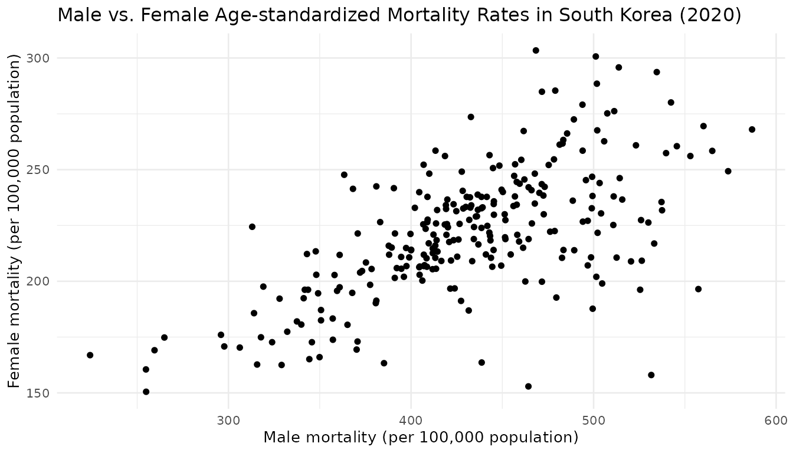

tidycensuskr 시작
tidycensuskr 패키지로 대한민국의 인구주택총조사와 각종
사회경제, 도시 통계치를 시군구 단위로 쉽게 사용할 수 있습니다. 그리고
통계치와 시군구 경계 도형을 함께 제공하여 사용자들이 인구, 주택, 경제,
조세, 사망률 자료 등을 행정구역 경계와 연결하여 쿼리할 수 있습니다.
패키지를 사용하려면 먼저 README를 따라서 패키지를 설치한 다음 불러오십시오.
tidycensuskr을 최대한 활용하려면 대한민국 시군구 경계
도형을 포함하는 동반 데이터 패키지 tidycensuskr.sf가
필요합니다. 이 패키지는 R-universe에서 설치할 수 있습니다:
install.packages("tidycensuskr.sf", repos = "https://sigmafelix.r-universe.dev")동반 패키지를 설치하고 나면, system.file() 함수를 이용해
2010년, 2015년, 2020년의 시군구 경계를 각각 포함한 세 개의 RDS 파일을
불러올 수 있습니다. 예를 들어, 2010년 시군구 경계 도형의 RDS 파일 경로는
다음과 같이 불러올 수 있습니다:
fs10 <- system.file("extdata", "adm2_sf_2010.rds", package = "tidycensuskr.sf")
adm2_sf_2010 <- readRDS(fs10)1. 한국 행정구역 체계
한국의 지역통계 자료는 세 가지 행정구역 단위로 구성됩니다.
-
시도: 가장 높은 수준의 행정구역 단위입니다.
- 광역시는 도와 동등한 수준으로 취급됩니다.
- 제주도, 강원도, 전라북도는 특별자치도의 지위를 가지고 있습니다. 다만 사용하는 영문명은 조금씩 다릅니다.
-
시군구: 두 번째 수준의 행정구역 단위로, 시(도시)와
군(농촌), 구(대도시 내 구역)를 포함합니다.
- 시: 도시 지역을 나타내는 행정구역 단위입니다.
- 군: 농촌 지역을 나타내며, 일반적으로 인구가 5만 명 미만인 지역입니다.
-
구: 대도시나 큰 도시 내의 하위 구역으로, 광역시
내의 자치구와 11개 대도시 내의 자치구가 아닌 구(일반구)로 나뉩니다.
- 광역시 내의 구는 자치구입니다.
- 2025년 기준 수원시, 성남시, 안양시, 고양시, 안산시, 용인시, 청주시, 천안시, 포항시, 창원시, 전주시 내의 구는 “자치구가 아닌 구”입니다.
-
읍면동: 세 번째 수준의 행정구역 단위로, 읍(도시
지역 내의 작은 단위), 면(농촌 지역 내의 작은 단위), 동(도시 내의 가장
작은 단위)을 포함합니다.
- 읍: 군 내의 도시 지역으로, 일반적으로 인구가 2만 명 이상인 지역입니다.
- 면: 군 내의 농촌 지역으로, 일반적으로 인구가 2만 명 미만인 지역입니다.
- 동: 시와 구 내의 가장 작은 행정구역 단위입니다.
- 기타 단위로는 리(농촌 지역 내의 더 작은 단위)가 있습니다.
행정구역분류의 국제적 비교
아래 표는 대한민국의 행정구역 단위를 미국, 유럽연합, 영국(잉글랜드)과 대략적으로 비교한 것입니다. 각 단위가 일대일로 대응되지는 않을 수 있지만, 인구조사나 지역 데이터를 다룰 때 자료가 조사, 수집된 수준을 대략적으로 이해하는 데 도움이 될 수 있습니다.
| 한국 | 미국 | 유럽연합 (NUTS1) | 영국 (잉글랜드) |
|---|---|---|---|
| 시도 | State | NUTS1 | Regions / Combined Authorities |
| 시군구 | County | NUTS2 | |
| 읍면동 | Townships / Towns / Census County Division | NUTS3 | Districts / Wards / Boroughs |

행정구역 경계와 코드 체계는 조사 연도나 자료원에 따라서 다릅니다.
tidycensuskr에서는 일관된 행정구역 코드를 제공하여 통계치를
통합적으로 사용할 수 있도록 합니다. 예를 들어, 2020년 기준으로
대한민국에는 250개의 시군구와 17개의 시도가 있습니다.
2. 가용 센서스 데이터
이 패키지는 센서스 및 조사 데이터를 다음과 같은 방식으로
제공합니다:
- 특정 하위 집합을 쿼리하기 위한 함수 anycensus()
- 긴 테이블 (long table) 포맷의 내장 데이터셋 censuskor
Data types
| type | class1 | class2 | unit | description | available |
|---|---|---|---|---|---|
| population | all households | total | persons | Total population count | 2010, 2015, 2020 |
| population | all households | male | persons | Male population count | 2010, 2015, 2020 |
| population | all households | female | persons | Female population count | 2010, 2015, 2020 |
| tax | income | general | million KRW | General income tax revenue | 2020 |
| tax | income | labor | million KRW | Labor income tax revenue | 2020 |
| mortality | All causes | total | per 100k population | Total mortality rate from all causes | 2020 |
| mortality | All causes | male | per 100k population | Male mortality rate from all causes | 2020 |
| mortality | All causes | female | per 100k population | Female mortality rate from all causes | 2020 |
| economy | company | total | count | Total number of companies | 2010, 2015, 2020 |
| housing | housing types | total | count | Total number of housing units | 2010, 2015, 2020 |
| housing | housing types | detached housing | count | Number of detached/single-family houses | 2010, 2015, 2020 |
| housing | housing types | apartment | count | Number of apartment units | 2010, 2015, 2020 |
| housing | housing types | row house | count | Number of row house units | 2010, 2015, 2020 |
| housing | housing types | multiplex | count | Number of multiplex housing units | 2010, 2015, 2020 |
| housing | housing types | non-residential | count | Number of non-residential buildings used for housing | 2010, 2015, 2020 |
| medicine | doctors | anesthesiology and pain medicine | persons | Number of anesthesiologists | 2010, 2015, 2020 |
| medicine | doctors | clinical laboratory medicine | persons | Number of clinical laboratory physicians | 2010, 2015, 2020 |
| medicine | doctors | dermatology | persons | Number of dermatologists | 2010, 2015, 2020 |
| medicine | doctors | emergency medicine | persons | Number of emergency medicine physicians | 2010, 2015, 2020 |
| medicine | doctors | family medicine | persons | Number of family medicine physicians | 2010, 2015, 2020 |
| medicine | doctors | internal medicine | persons | Number of internal medicine physicians | 2010, 2015, 2020 |
| medicine | doctors | neurology | persons | Number of neurologists | 2010, 2015, 2020 |
| medicine | doctors | neurosurgery | persons | Number of neurosurgeons | 2010, 2015, 2020 |
| medicine | doctors | nuclear medicine | persons | Number of nuclear medicine physicians | 2010, 2015, 2020 |
| medicine | doctors | obstetrics and gynecology | persons | Number of OB/GYN physicians | 2010, 2015, 2020 |
| medicine | doctors | occupational and environmental medicine | persons | Number of occupational/environmental medicine physicians | 2010, 2015, 2020 |
| medicine | doctors | ophthalmology | persons | Number of ophthalmologists | 2010, 2015, 2020 |
| medicine | doctors | orthopedics | persons | Number of orthopedic surgeons | 2010, 2015, 2020 |
| medicine | doctors | otorhinolaryngology | persons | Number of ENT specialists | 2010, 2015, 2020 |
| medicine | doctors | pathology | persons | Number of pathologists | 2010, 2015, 2020 |
| medicine | doctors | pediatrics | persons | Number of pediatricians | 2010, 2015, 2020 |
| medicine | doctors | plastic surgery | persons | Number of plastic surgeons | 2010, 2015, 2020 |
| medicine | doctors | preventive medicine | persons | Number of preventive medicine physicians | 2010, 2015, 2020 |
| medicine | doctors | psychiatry | persons | Number of psychiatrists | 2010, 2015, 2020 |
| medicine | doctors | radiation oncology | persons | Number of radiation oncologists | 2010, 2015, 2020 |
| medicine | doctors | radiology | persons | Number of radiologists | 2010, 2015, 2020 |
| medicine | doctors | rehabilitation medicine | persons | Number of rehabilitation medicine physicians | 2010, 2015, 2020 |
| medicine | doctors | surgery | persons | Number of general surgeons | 2010, 2015, 2020 |
| medicine | doctors | thoracic and cardiovascular surgery | persons | Number of thoracic/cardiovascular surgeons | 2010, 2015, 2020 |
| medicine | doctors | total | persons | Total number of doctors across all specialties | 2010, 2015, 2020 |
| medicine | doctors | tuberculosis | persons | Number of tuberculosis specialists | 2010, 2015, 2020 |
| medicine | doctors | urology | persons | Number of urologists | 2010, 2015, 2020 |
| migration | marital | female | count | Number of female marriage migrants | 2010, 2015, 2020 |
| migration | marital | male | count | Number of male marriage migrants | 2010, 2015, 2020 |
| migration | marital | total | count | Total number of marriage migrants | 2010, 2015, 2020 |
| environment | organic_matter | discharge | kg_day | Daily organic matter discharge | 2010, 2015, 2020 |
| environment | wastewater | generation | m3_day | Daily wastewater generation volume | 2010, 2015, 2020 |
| environment | wastewater | discharge | m3_day | Daily wastewater discharge volume | 2010, 2015, 2020 |
| environment | organic_matter | generation | kg_day | Daily organic matter generation | 2010, 2015, 2020 |
| population | fertility | total | births | Total number of births | 2010, 2015, 2020 |
| population | fertility | 15-19 (simulated) | births per 1000 | Age-specific fertility rate for ages 15-19 (simulated) | 2010, 2015, 2020 |
| population | fertility | 20-24 | births per 1000 | Age-specific fertility rate for ages 20-24 | 2010, 2015, 2020 |
| population | fertility | 25-29 | births per 1000 | Age-specific fertility rate for ages 25-29 | 2010, 2015, 2020 |
| population | fertility | 30-34 | births per 1000 | Age-specific fertility rate for ages 30-34 | 2010, 2015, 2020 |
| population | fertility | 35-39 | births per 1000 | Age-specific fertility rate for ages 35-39 | 2010, 2015, 2020 |
| population | fertility | 40-44 | births per 1000 | Age-specific fertility rate for ages 40-44 | 2010, 2015, 2020 |
| population | fertility | 45-49 | births per 1000 | Age-specific fertility rate for ages 45-49 | 2010, 2015, 2020 |
| economy | grdp | gross regional domestic product at market prices | million KRW | Total GRDP at market prices | 2010, 2015, 2020 |
| economy | grdp | net taxes on products | million KRW | Net taxes on products component of GRDP | 2010, 2015, 2020 |
| economy | grdp | total value added at basic prices | million KRW | Total value added at basic prices | 2010, 2015, 2020 |
| economy | grdp | agriculture, forestry and fishing | million KRW | GRDP from agriculture, forestry, and fishing sector | 2010, 2015, 2020 |
| economy | grdp | mining and quarrying | million KRW | GRDP from mining and quarrying sector | 2010, 2015, 2020 |
| economy | grdp | manufacturing | million KRW | GRDP from manufacturing sector | 2010, 2015, 2020 |
| economy | grdp | electricity, gas, steam and air conditioning supply; water supply and waste management | million KRW | GRDP from utilities and waste management sector | 2010, 2015, 2020 |
| economy | grdp | construction | million KRW | GRDP from construction sector | 2010, 2015, 2020 |
| economy | grdp | wholesale and retail trade | million KRW | GRDP from wholesale and retail trade sector | 2010, 2015, 2020 |
| economy | grdp | transportation and storage | million KRW | GRDP from transportation and storage sector | 2010, 2015, 2020 |
| economy | grdp | accommodation and food service activities | million KRW | GRDP from accommodation and food services sector | 2010, 2015, 2020 |
| economy | grdp | information and communication | million KRW | GRDP from information and communication sector | 2010, 2015, 2020 |
| economy | grdp | financial and insurance activities | million KRW | GRDP from financial and insurance sector | 2010, 2015, 2020 |
| economy | grdp | real estate activities; rental and leasing activities | million KRW | GRDP from real estate and rental sector | 2010, 2015, 2020 |
| economy | grdp | professional, scientific and technical activities; business support facilities | million KRW | GRDP from professional/technical services sector | 2010, 2015, 2020 |
| economy | grdp | public administration and defence; compulsory social security | million KRW | GRDP from public administration sector | 2010, 2015, 2020 |
| economy | grdp | education | million KRW | GRDP from education sector | 2010, 2015, 2020 |
| economy | grdp | human health and social work activities | million KRW | GRDP from health and social work sector | 2010, 2015, 2020 |
| economy | grdp | arts, sports and recreation; membership organizations and personal services | million KRW | GRDP from arts, recreation, and personal services sector | 2010, 2015, 2020 |
| social security | basic living security | female | persons | Female recipients of basic living security benefits | 2010, 2015, 2020 |
| social security | basic living security | male | persons | Male recipients of basic living security benefits | 2010, 2015, 2020 |
| social security | basic pension | male | persons | Male recipients of basic pension | 2015, 2020 |
| social security | basic pension | female | persons | Female recipients of basic pension | 2015, 2020 |
| welfare | facilities | residential facility | count | Number of residential welfare facilities | 2015, 2020 |
| welfare | facilities | service facility | count | Number of service-oriented welfare facilities | 2015, 2020 |
| welfare | facilities | other facility | count | Number of other welfare facilities | 2015, 2020 |
| welfare | registered physically mentally challenged | female_0-19 | persons | Registered disabled females aged 0-19 | 2015, 2020 |
| welfare | registered physically mentally challenged | female_20-39 | persons | Registered disabled females aged 20-39 | 2015, 2020 |
| welfare | registered physically mentally challenged | female_40-64 | persons | Registered disabled females aged 40-64 | 2015, 2020 |
| welfare | registered physically mentally challenged | female_65-79 | persons | Registered disabled females aged 65-79 | 2015, 2020 |
| welfare | registered physically mentally challenged | female_80+ | persons | Registered disabled females aged 80 and above | 2015, 2020 |
| welfare | registered physically mentally challenged | male_0-19 | persons | Registered disabled males aged 0-19 | 2015, 2020 |
| welfare | registered physically mentally challenged | male_20-39 | persons | Registered disabled males aged 20-39 | 2015, 2020 |
| welfare | registered physically mentally challenged | male_40-64 | persons | Registered disabled males aged 40-64 | 2015, 2020 |
| welfare | registered physically mentally challenged | male_65-79 | persons | Registered disabled males aged 65-79 | 2015, 2020 |
| welfare | registered physically mentally challenged | male_80+ | persons | Registered disabled males aged 80 and above | 2015, 2020 |
| welfare | registered physically mentally challenged severity | _0-19 | persons | Total registered disabled persons aged 0-19 | 2015 |
| welfare | registered physically mentally challenged severity | _20-39 | persons | Total registered disabled persons aged 20-39 | 2015 |
| welfare | registered physically mentally challenged severity | _40-64 | persons | Total registered disabled persons aged 40-64 | 2015 |
| welfare | registered physically mentally challenged severity | _65-79 | persons | Total registered disabled persons aged 65-79 | 2015 |
| welfare | registered physically mentally challenged severity | _80+ | persons | Total registered disabled persons aged 80 and above | 2015 |
| welfare | registered physically mentally challenged severity | less severely impaired_0-19 | persons | Less severely impaired persons aged 0-19 | 2020 |
| welfare | registered physically mentally challenged severity | less severely impaired_20-39 | persons | Less severely impaired persons aged 20-39 | 2020 |
| welfare | registered physically mentally challenged severity | less severely impaired_40-64 | persons | Less severely impaired persons aged 40-64 | 2020 |
| welfare | registered physically mentally challenged severity | less severely impaired_65-79 | persons | Less severely impaired persons aged 65-79 | 2020 |
| welfare | registered physically mentally challenged severity | less severely impaired_80+ | persons | Less severely impaired persons aged 80 and above | 2020 |
| welfare | registered physically mentally challenged severity | severely impaired_0-19 | persons | Severely impaired persons aged 0-19 | 2020 |
| welfare | registered physically mentally challenged severity | severely impaired_20-39 | persons | Severely impaired persons aged 20-39 | 2020 |
| welfare | registered physically mentally challenged severity | severely impaired_40-64 | persons | Severely impaired persons aged 40-64 | 2020 |
| welfare | registered physically mentally challenged severity | severely impaired_65-79 | persons | Severely impaired persons aged 65-79 | 2020 |
| welfare | registered physically mentally challenged severity | severely impaired_80+ | persons | Severely impaired persons aged 80 and above | 2020 |
| housing | vacant housing | fraction | percent | Percentage of vacant housing units | 2015, 2020 |
| housing | vacant housing | number of vacant housing | count | Total number of vacant housing units | 2015, 2020 |
| housing | vacant housing | total number of housing | count | Total number of housing units (occupied and vacant) | 2015, 2020 |
| landuse | greenspace | number of greenspace | count | Number of greenspaces | 2010, 2015, 2020 |
| landuse | greenspace | area of greenspace | square meters | Total area of greenspaces | 2010, 2015, 2020 |
| landuse | parks | number of parks | count | Number of parks | 2010, 2015, 2020 |
| landuse | parks | area of parks | square meters | Total area of parks | 2010, 2015, 2020 |
| landuse | road | length of roads | meters | Total length of roads | 2010, 2015, 2020 |
| landuse | road | area of roads | square meters | Total area of roads | 2010, 2015, 2020 |
anycensus()로 데이터 쿼리하기
anycensus() 함수는 사용자가 원하는 연도, 행정구역 단위,
통계 유형을 지정하여 시군구 단위의 센서스 데이터를 쉽게 쿼리할 수 있도록
합니다.
-
year: 센서스 데이터의 연도 (예: 2010, 2015, 2020) -
codes: 시도 또는 시군구 이름 또는 코드를 벡터로 지정 (예:c("Seoul", "Incheon")또는c("11000", "28000")).NULL로 설정하면 모든 지역을 반환합니다. -
type: 조회할 센서스 데이터의 유형 (예: “population”, “mortality”, “housing” 등) -
level: 반환할 행정구역 수준 (“adm2”: 시군구 수준, “adm1”: 시도 수준). 기본값은 “adm2”입니다.
자료값을 포함한 필드는 가로로 긴 형태 (wide form)로 반환됩니다.
adm2_code 열은 load_districts()로 불러온 경계
도형 파일과 센서스 데이터를 직접 연결하는 역할을 하고, 통계데이터처의 각
연도 행정구역 코드를 따릅니다.
df_2020 <- anycensus(year = 2020,
type = "mortality",
level = "adm2")
head(df_2020)
#> # A tibble: 6 × 9
#> year adm1 adm1_code adm2 adm2_code type `all causes_total_p1p`
#> <dbl> <chr> <dbl> <chr> <dbl> <chr> <dbl>
#> 1 2020 Chungcheongbuk-do 33 Cheo… 33040 mort… 312.
#> 2 2020 Chungcheongnam-do 34 Cheo… 34010 mort… 321.
#> 3 2020 Gyeongsangbuk-do 37 Poha… 37010 mort… 318.
#> 4 2020 Gyeongsangnam-do 38 Chan… 38110 mort… 323.
#> 5 2020 Jeollabuk-do 35 Jeon… 35010 mort… 283.
#> 6 2020 Gyeongsangbuk-do 37 Ando… 37040 mort… 353
#> # ℹ 2 more variables: `all causes_male_p1p` <dbl>,
#> # `all causes_female_p1p` <dbl>상위 행정구역 단위로 자료값이 집계되는 기능도 제공됩니다.
level = "adm1"로 설정하고 집계 함수를 지정하면,
시도(adm1) 수준에서 각 구역의 통계치를 요약한 결과를 얻을
수 있습니다.
df_2020_sido <- anycensus(year = 2020,
type = "mortality",
level = "adm1",
aggregator = mean,
na.rm = TRUE)
head(df_2020_sido)
#> # A tibble: 6 × 7
#> # Groups: year, type, adm1, adm1_code [6]
#> year type adm1 adm1_code `all causes_total_p1p` `all causes_male_p1p`
#> <dbl> <chr> <chr> <dbl> <dbl> <dbl>
#> 1 2020 mortality Busan 21 335. 458.
#> 2 2020 mortality Chungc… 33 344. 469.
#> 3 2020 mortality Chungc… 34 336. 450.
#> 4 2020 mortality Daegu 22 311. 426.
#> 5 2020 mortality Daejeon 25 306. 399.
#> 6 2020 mortality Gangwo… 32 340. 466.
#> # ℹ 1 more variable: `all causes_female_p1p` <dbl>
censuskor 내장 데이터셋
data(censuskor)을 이용하면 패키지에 내장된 전체 센서스
데이터를 긴 형태로 불러올 수 있습니다. 이 데이터셋은
anycensus() 함수로 쿼리할 수 있는 모든 연도, 행정구역, 통계
유형을 포함합니다.
각 열의 의미는 다음과 같습니다:
-
year: 연도 -
adm1: 시도 이름 -
adm1_code: 시도 코드 -
adm2: 시군구 이름 -
adm2_code: 시군구 코드 -
type: 센서스 또는 조사 유형 -
class1: 추가 분류 변수 1 -
class2: 추가 분류 변수 2 -
unit: 측정 단위 -
value: 관측된 자료값
data(censuskor)
head(censuskor)
#> # A data frame: 6 × 10
#> year adm1 adm1_code adm2 adm2_code type class1 class2 unit value
#> * <dbl> <chr> <dbl> <chr> <dbl> <chr> <chr> <chr> <chr> <dbl>
#> 1 2010 Chungcheongb… 33 Cheo… 33010 popu… all h… total pers… 646939
#> 2 2010 Chungcheongb… 33 Cheo… 33010 popu… all h… male pers… 318355
#> 3 2010 Chungcheongb… 33 Cheo… 33010 popu… all h… female pers… 328584
#> 4 2020 Chungcheongb… 33 Cheo… 33040 tax income gener… mill… 524478
#> 5 2020 Chungcheongb… 33 Cheo… 33040 tax income labor mill… 598560
#> 6 2015 Chungcheongb… 33 Cheo… 33040 popu… all h… total pers… 797099시각화 예제
anycensus() 함수는 정돈된 데이터를 반환하므로,
ggplot2로 시각화하는 것이 간단합니다.
ggplot(df_2020, aes(x = `all causes_male_p1p`, y = `all causes_female_p1p`)) +
geom_point() +
labs(
x = "Male mortality (per 100,000 population)",
y = "Female mortality (per 100,000 population)",
title = "Male vs. Female Age-standardized Mortality Rates in South Korea (2020)"
) +
theme_minimal(base_size = 10)